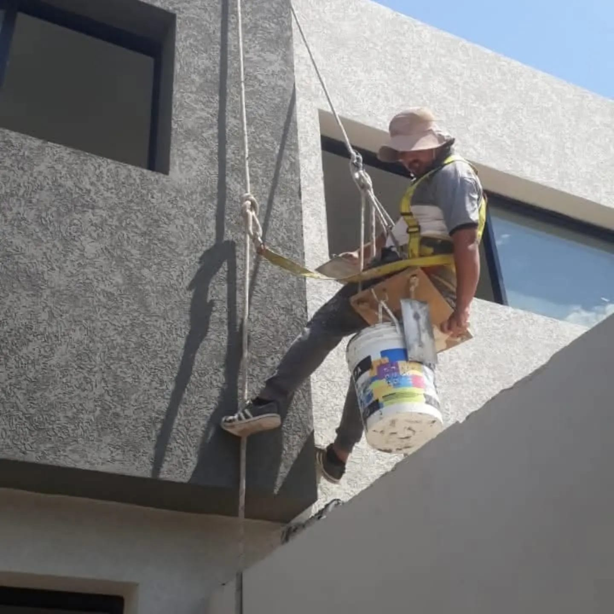
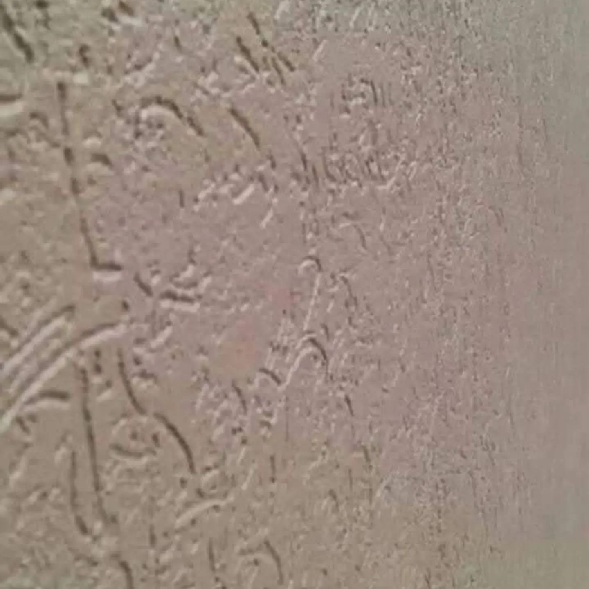
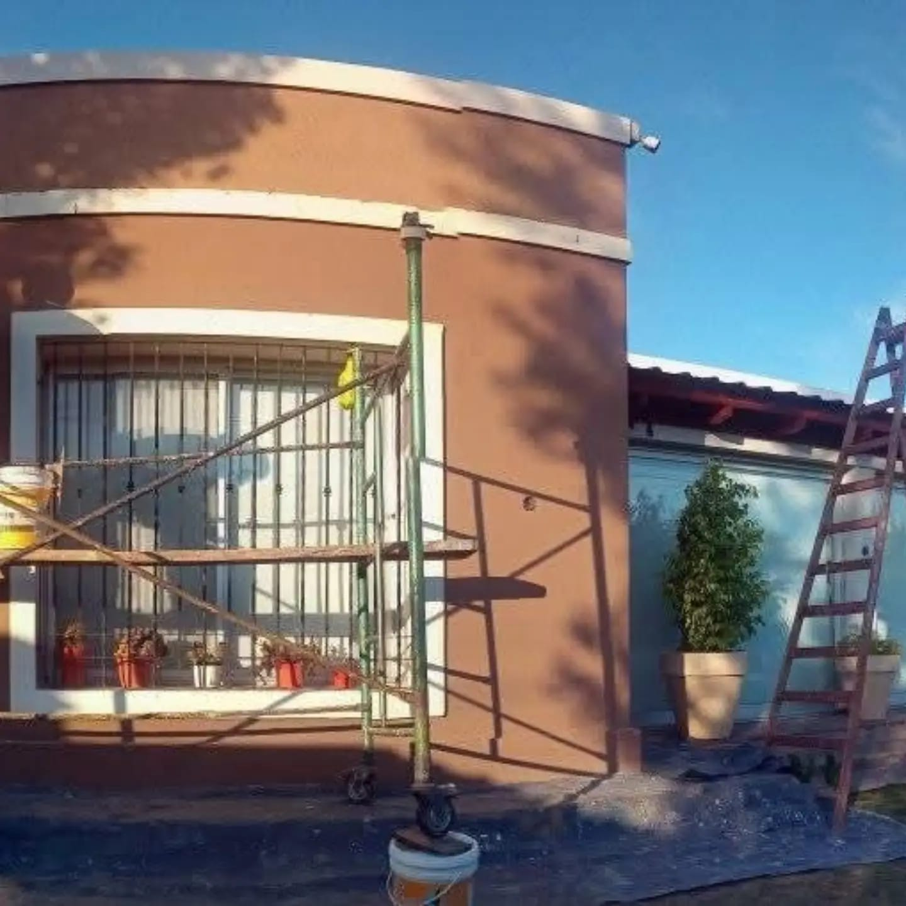
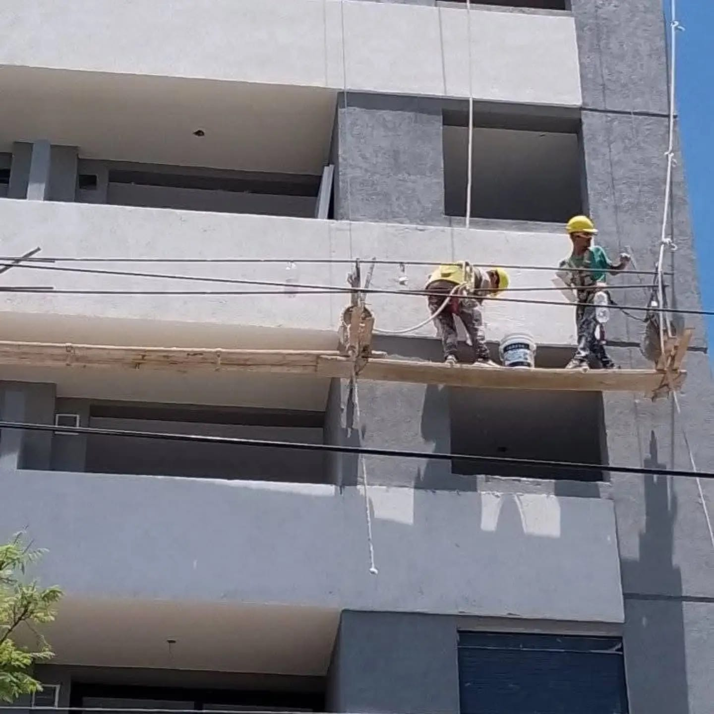

Trabajos de pintura
Trabajos de pintura para paredes y fachadas. Contá qué espacio querés renovar y consultá por WhatsApp.
Consultar por pintura
Pintura y revestimiento en Córdoba capital
Pintores Moreta realiza trabajos de pintura, revestimiento plástico texturado y trabajos en altura. Conocé algunos trabajos y escribí por WhatsApp para consultar por tu espacio.
WhatsApp+54 9 351 890-8906
Pintores Moreta · Córdoba capital
Pintura, revestimiento plástico texturado y trabajos en altura, con fotos compartidas por el equipo para que conozcas parte de su trabajo.
Servicios
Trabajos de pintura para paredes y fachadas. Contá qué espacio querés renovar y consultá por WhatsApp.
Consultar por pinturaUna terminación con textura para renovar superficies. Compartí una foto y contá qué resultado buscás.
Consultar por texturadoConsultá por trabajos en altura y contanos qué superficie necesitás intervenir para conversar los detalles por WhatsApp.
Consultar por trabajos en alturaTrabajos
Fotos compartidas por el equipo para mostrar trabajos de pintura, revestimiento y trabajos en altura.



Cómo consultar
Describí el espacio y la superficie para orientar la consulta.
Las imágenes ayudan a mostrar el estado actual y el tipo de trabajo que tenés en mente.
El alcance se define según la superficie y el resultado que buscás.
Antes de escribir
Trabajos de pintura, revestimiento plástico texturado y trabajos en altura.
Pintores Moreta trabaja en Córdoba capital.
Contá qué superficie querés renovar, en qué zona está y, si podés, adjuntá algunas fotos.
Los detalles se conversan según la superficie y el resultado que buscás.
Contacto
Escribile a Pintores Moreta por WhatsApp. Podés contar qué trabajo necesitás y compartir algunas fotos.